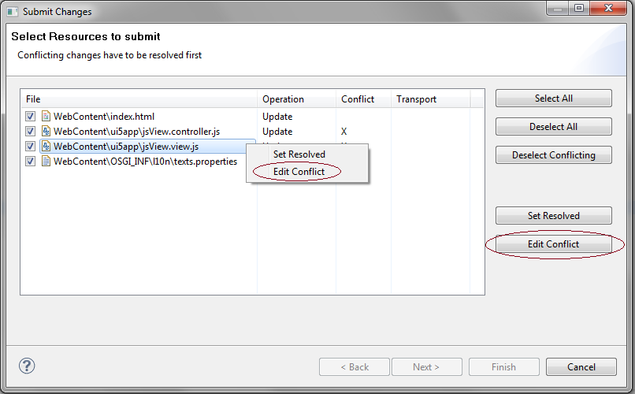
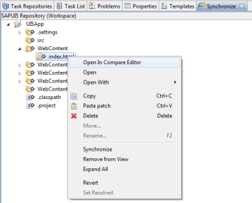
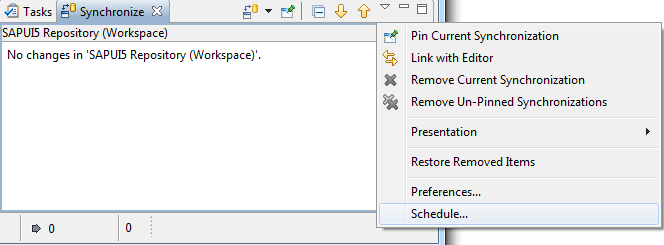
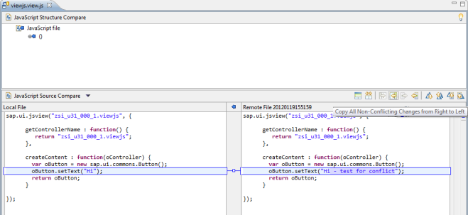

Handling Conflicts
When you submit or retrieve a change, the Conflict column on the Submit Changes or Retrieve Changes screen indicates whether there is a conflict for a file. The dialog shows the files for which submit/retrieve conflicts exist, that is, another user has submitted a newer file version in the meantime. Submit conflicts must be resolved before submission. If retrieve conflicts cannot be solved, the local files are overwritten.
To set the conflict files as resolved, select the file (or multiple files) and choose Set Resolved. The same functionality is also available in the context menu of the selected file or files.
To display the conflicts with the Compare Editor, choose Edit Conflict. The Edit Conflict function is not supported for multiple file selection.
Once you have analyzed and edited the changes, you can choose Save and Set as Resolved for the conflict file.

In the Synchronize view, you can compare the local and remote state.
- Mark the SAPUI5 application project in the Project Explorer in Eclipse.
- To open the Synchronize view, and choose
 Window
Window  Show View Others ...
Show View Others ...  , then choose Team Synchronize .
, then choose Team Synchronize . - To connect to a synchronization type, choose the Synchronize … icon, select Synchronize with SAPUI5 Repository as synchronization type, and choose Finish.
- To update the Synchronize view, press F5 in the Synchronize view.
- The Synchronize view now shows differences between the local and remote state for all shared projects, by indicating whether the project is in sync with the repository or, if not, indicating the differences.
The Synchronize view also allows you to schedule a periodic refresh of the state of the files in the backend.


- From the Synchronize view, you open the Compare Editor by right-clicking the conflicting file and choosing Open in Compare Editor (or double-clicking the file).
- You can now display and resolve the conflicts in the Compare Editor.
- Once the conflict is resolved, you can set the status of the file to "Resolved" by right-clicking the file and choosing Set Resolved. The file is now ready to be submitted.
